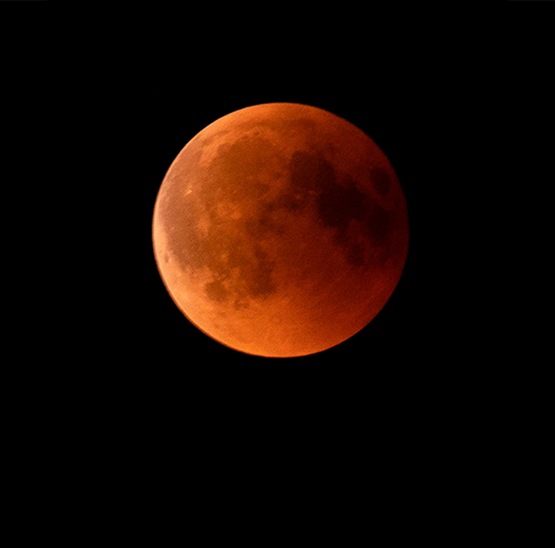
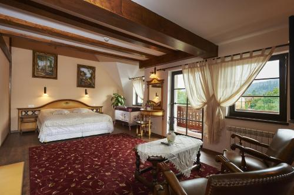
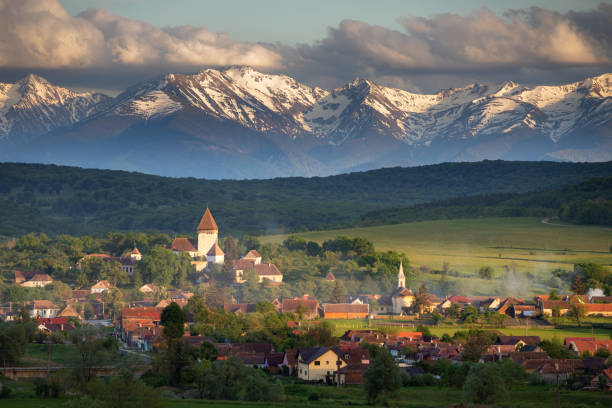

TRANSILVANEA LUNA DE SANGRE
Descripción
Un viaje inolvidable entre castillos envueltos en niebla, montañas oscuras y cielos teñidos por el rojo de la luna. Dos días y una noche.
Gracias a la baja contaminación lumínica de las montañas de Transilvania y a sus amplios paisajes naturales, esta región es considerada uno de los mejores lugares de Europa del Este para contemplar eclipses y fenómenos astronómicos. La combinación entre cielos despejados, naturaleza salvaje y el ambiente histórico de la zona crea una experiencia única, acompañada además por relatos sobre las antiguas creencias y mitos relacionados con la luna y la noche en la cultura transilvana.
Estadía en : Conacul Ambient. Situado en el tranquilo pueblo de Cristian, cerca de Brașov y rodeado por las montañas de los Cárpatos, este alojamiento combina arquitectura tradicional rumana con vistas panorámicas ideales para la observación nocturna. La zona ofrece un entorno silencioso, perfecto para disfrutar de la Luna de Sangre lejos de las luces de las grandes ciudades.
Precio del viaje : 790 € por persona. Incluye alojamiento de una noche en Transilvania, desayuno tradicional, Tranporte de ida y vuelta, guía para la observación de la Luna de Sangre, actividades culturales y acceso a los miradores astronómicos de la región.
Momento unico
Sabias que la luna de sangre es un fenómeno astronómico que ocurre durante un eclipse lunar total.
Itinerario
Día 1 - Llegada a Transilvania
Cristian y Brașov · 10:00 - 16:00
La experiencia comienza con la llegada a la región de Transilvania y el traslado hacia el pueblo de Cristian, rodeado por las montañas de los Cárpatos. Tras la llegada al alojamiento Conacul Ambient, los viajeros podrán instalarse y disfrutar del entorno natural y la arquitectura tradicional rumana.
Durante la tarde se realizará una visita por los alrededores de Brașov y pequeños pueblos históricos de la región, descubriendo castillos, calles medievales y leyendas locales relacionadas con la luna y la noche.

Día 2 - Observación de la Luna de Sangre
Miradores astronómicos de los Cárpatos · 20:00 - 02:00
Cuando cae la noche, comienza la actividad principal del viaje: la observación de la Luna de Sangre desde miradores astronómicos situados en las montañas de Transilvania.
Gracias a la baja contaminación lumínica y a los cielos despejados de la región, los viajeros podrán contemplar el eclipse lunar en un entorno único, acompañados por un guía especializado que explicará el fenómeno astronómico y las antiguas creencias transilvanas relacionadas con la luna roja.

Día 2 - Naturaleza y cultura de los Cárpatos
Cristian · Día 2 · 09:00 - 13:00
La mañana comenzará con un desayuno tradicional rumano en Conacul Ambient antes de disfrutar de un recorrido tranquilo por los paisajes naturales de los Cárpatos.
Durante la actividad se explorarán bosques, miradores y rincones históricos de la región, descubriendo la esencia de Transilvania entre montañas, niebla y pueblos tradicionales.

Día 3 - Regreso y cierre de la experiencia
Cristian · 09:00 - 13:00
Después del almuerzo y del tiempo libre para descansar o tomar fotografías del paisaje, se realizará el traslado de regreso.


Nota importante: Los programas descritos son susceptibles de cambios por razones puntuales ajenas a nuestra organización, tales como condiciones meteorológicas o de seguridad.
Observaciones
- Si alguien tiene alergia o intolerancia a algún tipo de alimento deberá comunicarlo a la agencia para prever incidentes inesperados que cundan el panico.
- Si alguien tiene algún tipo de enfermedad que afecte a la respiración, resistencia o movimiento, deberá comunicarlo a la agencia para prever una mayor seguridad y adaptación.
- Si traen menores de edad o acompañan a personas con necesidades especiales, manténganse pendientes de ellos y no se separen en ningún momento. Recuerden presentárselos a los guías e informarles de todo lo necesario que deban tener en cuenta.
- Cualquier siniestro sucedido durante el viaje o emergencia médica será responsabilidad económica de la propia persona afectada. Los costes correrán por cuenta del viajero. Se le acompañará o transportará a la zona de asistencia médica más cercana y, si es posible, el grupo continuará su recorrido.Si el viajero se recupera a tiempo para el regreso, será reincorporado al viaje. En caso de que no sea posible, deberá ponerse en contacto con sus familiares, amigos u otras personas de confianza para poder regresar a su hogar cuando esté recuperado.
Gastos de anulación según fecha de salida
| HASTA | IMPORTE |
|---|---|
| Más de dos meses de anticipación | 0% |
| Un mes de anticipación | 40% |
| Una semana de anticipación | 80% |
| El dia del viaje | 100% |
Conforme más se acerque a la fecha de salida el importe que se le quitara a su viaje sera mayor.
El precio incluye
- Alojamiento completo
- Guía especializado
- Billete de avión
- Excursiones nocturnas
El precio no incluye
- Transporte interno
- Comidas y cenas
- Seguro opcional
- Gastos personales
Preguntas frecuentes
Aprende mas sobre tu viaje, no te pierdas nada.
El eclipse lunar sí está previsto astronómicamente, aunque la visibilidad dependerá de las condiciones meteorológicas y del estado del cielo durante la noche.
La región cuenta con baja contaminación lumínica, cielos despejados y zonas montañosas alejadas de grandes ciudades, ofreciendo excelentes condiciones para la observación astronómica.
La estancia será en Conacul Ambient, un alojamiento tradicional situado en el pueblo de Cristian, cerca de Brașov. Ofrece habitaciones cómodas, vistas a las montañas y un entorno tranquilo ideal para descansar.
Las temperaturas pueden ser bajas durante la noche en las montañas de Transilvania, especialmente durante el eclipse. Se recomienda llevar ropa térmica, abrigo, guantes y calzado cómodo.
No. El viaje está pensado para cualquier viajero. Durante la observación habrá explicaciones sobre el eclipse, la Luna de Sangre y las leyendas transilvanas relacionadas con el cielo nocturno. La idea del viaje es aprender y experimentar eventos meteorologicos.